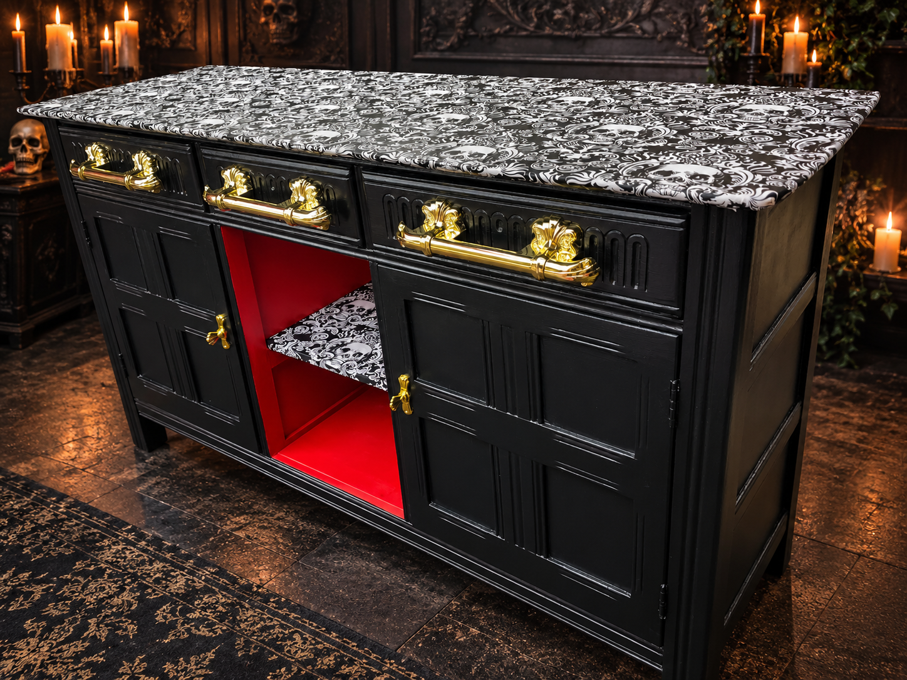
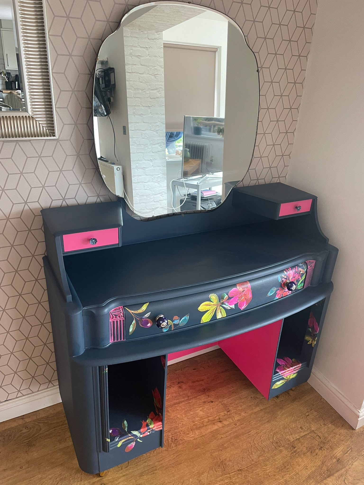
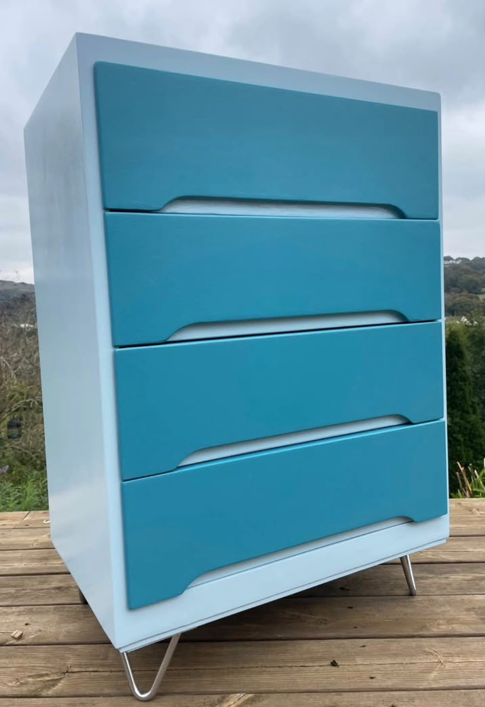
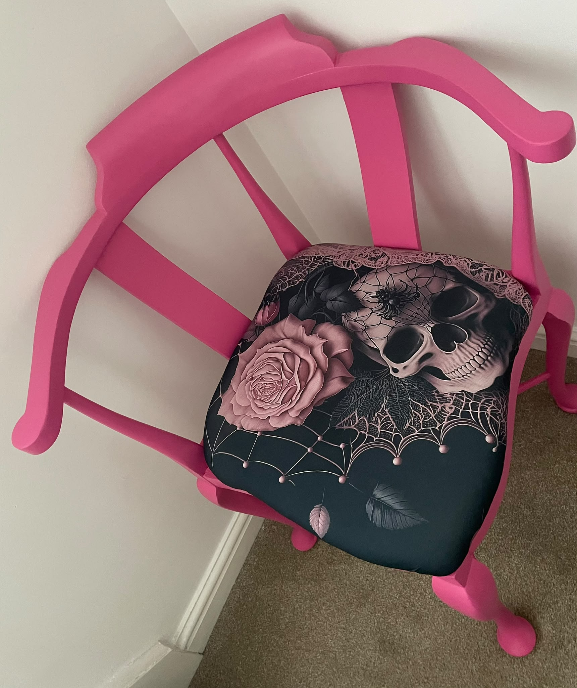
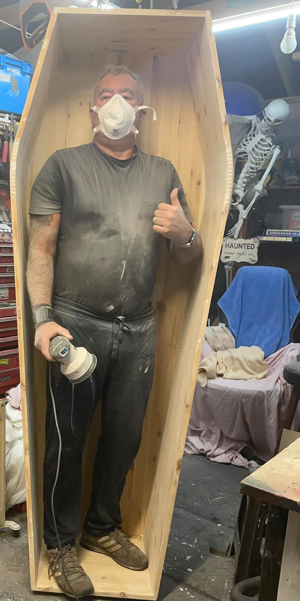

Made by hand in South Wales
FURNITURE FOR PEOPLE
WHO DON'T WANT ORDINARY.
Restored. Bespoke. Unexpected. Handmade by Garry in Treharris.
One-off pieces
AVAILABLE NOW.
A small selection from the current listings. Please confirm availability with Garry.

Floral dressing table £195
Blue 4-drawer chest £75
Pink & Skull Corner Chair £80Discover GJ's Emporium
EXPLORE OUR WORK.
From the wonderfully unusual to everyday furniture given new life.

Meet Garry
ONE MAKER.
PLENTY OF CHARACTER.
GJ's Emporium is Garry's workshop in Treharris. From restored furniture to one-of-a-kind coffin creations, everything comes with a personal touch.
See what Garry can make →Have something in mind?
LET'S MAKE SOMETHING INTERESTING.
Ask about commissions, restorations or current pieces.